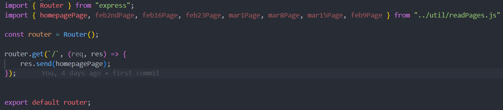

In our package.json we can define scripts. Then we can chose to run these scripts with whatever method of running our application we want. We can set it up to start on both nodemon, with running it in node, or running when application is setup up.
For instance this script defined here we can run with npm run dev which would execute nodemon with the commands listed. Our usage so far has been running scripts to execute commands in our terminal.
For linting we went over it shortly, and recieved some material to read up on on our own. We are told linters are not required for the exam, but it is relevant to have clean code so linters can help us on our way. I will set up ESLint after this project as i don't want to use it mid project, was told it wasn't a good idea to not run it from the start, since you will get a wall of text of suggestions.
Linters are used in the industry for analyzing code for errors, stylistic issues and deviation from coding standards. It is just a statistic analytic tool so it doesn't run any code it just read over the code. We had a story about another student who told how much he used it in his current job, and how important it had become to him. This convinced me it's better to start earlier than later to get used to the idea.
I would probably set up linter locally for each project, since i have other courses done in JavaScript this semester and i don't want it to interfere with what we do in the other course, since it is probably not always clean code, since we are doing algorithms and data structures.
For debugging i have been debugging a lot previous in my own applications. So it was wierd to me to learn from other students is has not been a goal of the studies during our education. I thought it was something to reflect on in your own time, since it's an essential part of understanding code. If you understand it, debugging comes more naturally. For JavaScript we have several tools even though we don't have a VM like in Java to help us debug.
For instance we have the browser itself that will help us with runtime errors, telling us what line of code failed during in the web application.
We also have the terminal, which is coincidently also running in our IDE's which helps us debug. They will be more specific about what is even wrong. It will often time just tell us the exact error that is going on.
Most errors in JavaScript is also accompanied by 2 different things. Firstly the linenumber on which it occured followed by the left margin of the line it occured in. Mostly i just personally use the line number and i don't think i've ever used the left margin to find the exact, position of where it went wrong. It is always accompanied by what went wrong like 'undefined' or 'null' or what ever the error is. So located the line should be enough.
Another part of debugging that i also talk about during my tutor job is 'isolate your code'. The worst thing you can do is write hundreds of line of code without testing and running it, and then when you finally test it, it doesn't work. Test along the way, and if you end up in a bad situation where you are flooded with a pile of untested code, break it down in to bite sizes and run bits of the code adding more and more of the code untill it breaks so you can locate where it's going wrong.
He also talked about rubberducking which i have heard about before, and i would agree i find it useful. Sometimes you get so deep into your own thoughts that you can't see the problem because you keep focusing on the same things. Speaking it out loud, i would prefer people not Speaking to a rubber duck, but speaking a loud to yourself, is in general a good way of doing it. This is because you force yourself to track the data through the entire process and you will naturally find the solution a lot of times because you reach the point you haven't thought about.
Lastly we have some debugging tools. One of the greatest tools is the ability to print out lines. Whenever we have any data going through a system we can always write out a sentence for instance "Is this where it's going wrong". And if it never reaches the line we know it's before that, and if it does we know it's after that. We can also log out the data itself to find out if its the data that is wrong. We can use this method both server and client side. On client side we also have an extra tool in our browser where we can set a breakpoint in our code and iterate through it step by step. This is similar to the debugger in IntelliJ which i have used a lot of times. I use it as last resort though, i find it a slower way of debugging than print outs, using the IDE's debugger.
Lastly he talks about taking breaks. I find this essential and everyone who has been in a group with me will know how much i enforce this. I was once told that taking a break is the most important part of the job by my boss. It helps us step away from problems and looks at them with a different perspective when we come back, and i solely agree with this statement.
For asynchronous code we want over some of the different asynchronous code we can face while writing an app.
One of the solutions to handle asynchronous code is using callbacks. There is problems within this, as we could theoretically just build an endless callbacks function, but it would result in the term 'CallbackHell' or 'Pyramid of Doom' which we want to avoid. On a personal node i always try to avoid this as much as possible. I believe in subtraction and extraction reducing the nested code as much as possible no matter what i'm writing. The reason for this is not only readability but also maintainability as it can be impossible to understand whats going on in heavy nested code.
Example from google images.
A promise is something that can either reject or resolve. And here we use a timeout to simulate the asynchronous behavior.
Another way to handle asynchronous code is using promises. For this we went through promise to understand it better. For this code the "I'm walking here..." would be displayed first then the promise would resolve afterwards.
We also got went over trying to build our own fetch and promisifed function to understand it better, as we might need to build our own Promises in the future. I will just show an example of us creating a promisified function.
For async await this is just syntactic sugar for Promises. It does make it a lot more readable though, resulting in code that is both easier to read, but is also more maintanable.
Here we have an IIFE(Immediate Invoked Function Expression). This will be called as the first thing if we wrap code like this. But here we can see the async await being used. If we ever write await it requires async to be in front of it otherwise we will get an error shown. It's not a bad error as it is very easy to spot. Using error lens it tells me that it needs an async in the function declaration, so it easy to fix.
For routing we build our own routing, building together our own pages from components, using our template engine to link the correct documents, and put it all together in a router class. This meant we can cut most of the content from our app.js resulting in a more mangeable code.
If we build our own router there is no reason to import the entire express to our file, all we need to import is the router. So what we can to create a router is import router from express. Then we instantiate the router, and it's ready for routes. Here we write all our writes, with the pages we import from our readPages which uses our template engine to string them together.
Finally we export our router so we can import it in our app.js and massively reduce the code in app.js compared to writing everything in app.js
This is our final result so far in this Node.js course and where we stand with building up our projects.